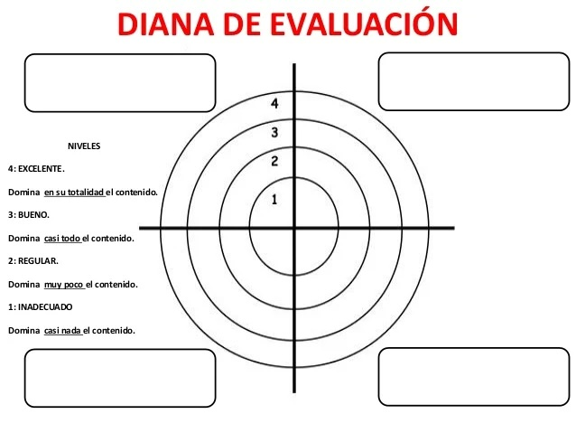

TeCriterios de evaluación
A continuación muestro dos herramientas que he diseñado para evaluar el portafolio y el trabajo cooperativo en parejas:
Portafolio digital - rúbrica de evaluación
Esta herramienta pertenece a la técnica de análisis de las producciones del alumnado.
- Qué evalúa: Se centra en la capacidad de síntesis de los "libros" de Moodle, la precisión técnica de los gráficos realizados a mano con regla y la inclusión de recursos de estudio (simuladores/vídeos). Momento de aplicación: Se utiliza de forma procesual y final al cierre de cada bloque temático (como ocurriría al final de la semana 3 del bloque de la materia).
- Obtención y tratamiento de datos: Los datos se recogen a través del enlace entregado en Moodle. La calificación no es solo numérica, sino que busca ser formativa, devolviendo feedback al alumno para que mejore su portafolio en la siguiente unidad.
- Gestión de variables: Ante problemas de resolución en las fotos de los gráficos, se permite el reenvío tras consultar el "videotutorial de apoyo" en el Foro TIC ya que el alumnado no es muy diestro en los recursos tecnológicos que se están empleando y su manejo es parte del aprendizaje del curso.
A continuación se muestra la rúbrica desarrollada que el alumnado tendrá a su disposición desde el inicio del curso:
| Criterio | Excelente (4) | Bueno (3) | Suficiente (2) | Insuficiente (1) |
| Síntesis | Resumen jerarquizado y visual | Resumen completo, pero plano | Resumen excesivo o confuso | Copia literal o sin resumen. |
| Gráficos manuales | Foto nítida, uso de regla, ejes rotulados | Uso de regla, pero foto borrosa | Dibujo sin regla o ejes erróneos | No incluye gráficos manuales. |
| Recursos extra | Enlaces comentados y pertinentes | Enlaces pertinentes sin comentar | Enlaces poco recomendados | No aporta recursos extra. |
Diana de evaluación - Trabajo cooperativo
Es un instrumento de evaluación visual que fomenta la coevaluación y la autoevaluación.
- Qué evalúa: El grado de implicación, el respeto a los turnos de palabra, el cumplimiento de roles y la ayuda mutua en la creación de la página del portafolio.
- Momento de aplicación: Se realiza semanalmente (evaluación procesual) para detectar conflictos antes del cierre de la unidad.
Obtención y tratamiento de datos: Los alumnos colorean los círculos concéntricos de la diana. Si la diana muestra desequilibrios (ej. un alumno hace todo el trabajo), se utiliza como base para un diálogo docente-alumno que reconduzca la situación.
Gestión de variables: Si surge un conflicto grave en la pareja (incertidumbre grupal), se aplican técnicas de mediación y se recuerda que las parejas rotarán en el siguiente bloque para garantizar que todos trabajen con todos.
Parámetros y descriptores:
- participación: implicación activa y proactiva de todos los miembros en la construcción del sitio en Google Sites.
- respeto: práctica de la escucha activa y valoración constructiva de las propuestas de los compañeros durante el diseño del proyecto.
- gestión de tareas: cumplimiento estricto de los plazos de entrega y asunción de responsabilidades individuales dentro del grupo.
- ayuda mutua: apoyo constante a los miembros del equipo que presentan mayores dificultades con las herramientas digitales o los conceptos de química.
Guía para el alumno: cada equipo debe consensuar su nivel en los cuatro ejes (1 al 4), arca un punto en la línea de cada eje (el centro es 1 y el borde exterior es 4) y une los puntos. la forma resultante mostrará visualmente el equilibrio del equipo; cuanto más se acerque al borde exterior, mayor será la madurez del trabajo cooperativo.
Se proporcionará la siguiente imagen:
